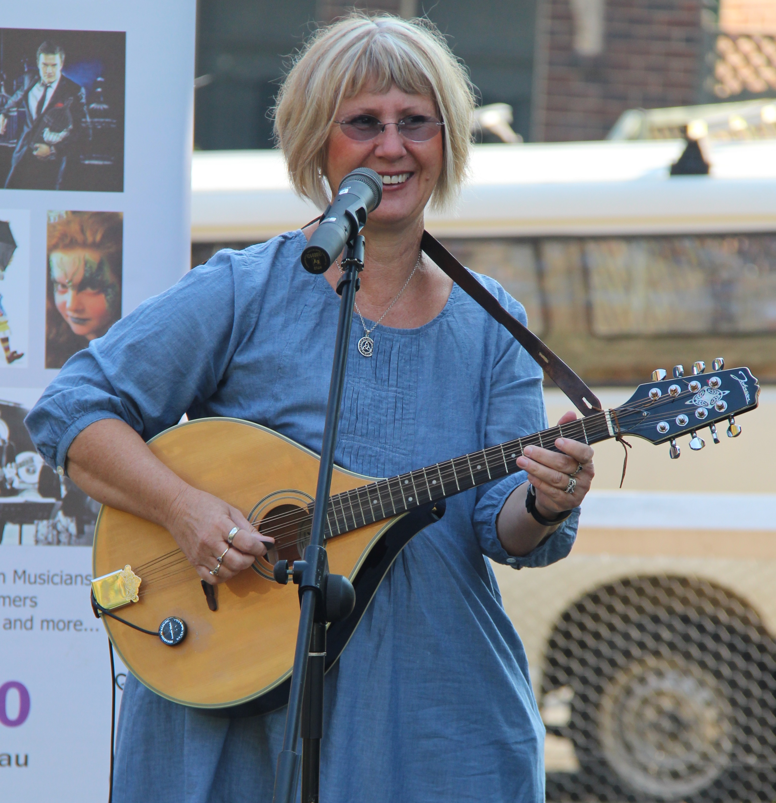

Shearer's Dream dreams again

Bernard O'Connor
After leaving Shearer's Draem, Bernard thought that he would learn how to fiddle. Five minutes later he joined the mighty "Ragged Band" with the legendary Karl Myriad. They played bush dances all over NSW and were the resident bushies at the Mean Fiddler (now called the Fiddler). He then strolled down to The Rocks and took up with a group of renegades knowl at "Green Jam" just for fun. He played with Green Jam for over 10 years with a residency at that lovely old pub The Hero of Waterloo. Bernard then started an Irish group called "No Messin" which later became a more serious folk group called "Chippo Days" Chippo Days draws from the rich traditions of Irish, Scottish and English folk, American Old Time music, gospel, a touch of bluegrass, the blues, jazz, Australian bush music, a little bit of good ol’ rock n’ roll. It plays their own original songs and tunes, Chippo Days brings a fresh and modern sensibility to the folk and roots sounds. In this group, Bernard collaborates with his partner Sara-Jane .
Bernard and Sara-Jane are now also collaborating in a new group called Folk 17. Folk 17 is:
- a reference to a club in Greece where Bernard used to entertain hippie travellers;
- a reminder that we Australians - and therefore our folk music - is a mixture of many many different cultures, influences and traditions.
Kris Took

After Shearer’s Dream, Kris Took joined a bush band in Camden called Coachwood. One member of Coachwood was the famous banjo player Alan Healy who also played with Sons of Rosin and now has a group called The Hooleys. Kris currently plays in folk band called Stringline. Band members Kris, Paul and Paula plays some traditional Irish and bluegrass tunes, sings some traditional songs and ‘Stringline’ them to get a unique sound of harmonies and blended instruments of violin, mandolins, banjo and guitar. Stringline performs a number of original songs and have written a piece about the tragic Aboriginal massacre in Appin, 200 years ago as well as some other pieces with catchy tunes and contemporary topics. They enjoy performing at folk festivals and have performed at Gulgong, Camden and Crookwell. They also enjoy open mics and music sessions in and the around the Southern Highlands.
Peter Jenner
Since departing leaving the band in 1985,Peter Jenner (Carlton Foster) spent many years working in TV production and later in I.T. He currently resides in Blackheath NSW where he makes beautiful carved top and back mandolins and mandolas. He sings with the Sydney Trade Union Choir and environmental choir 'Ecopella'. He has two sons in their twenties.